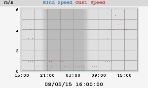
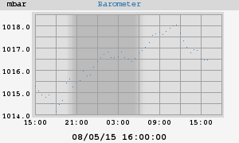

About this weather station:
| Latitude: | 39° 19.69' N |
| Longitude: | 076° 37.41' W |
| Altitude: | 91 meters |
This station uses a VantagePro2, controlled by 'weewx', an experimental weather software system written in Python. Weewx was designed to be simple, fast, and easy to understand by leveraging modern software concepts.
Weewx uptime: 5 days, 3 hours, 30 minutes
Server uptime: 5 days, 3 hours, 31 minutes
weewx v3.1.0
Today's Almanac
| Sunrise: | 06:10 |
| Sunset: | 20:14 |
| Moon Phase: | Waning gibbous (76% full) |

